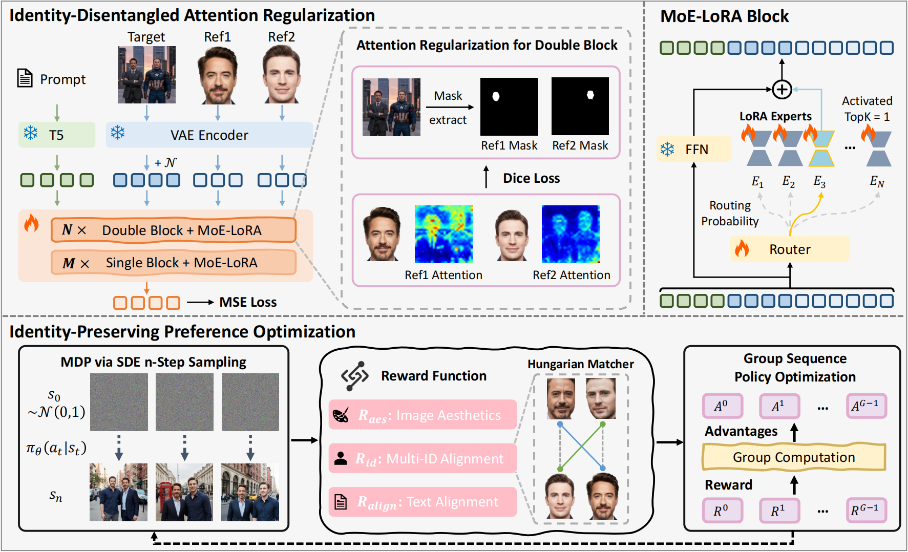
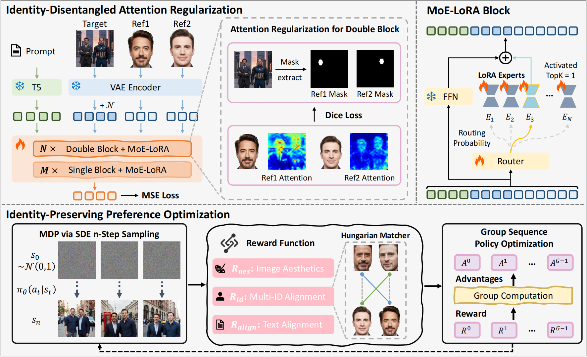

MultiCrafter
High-Fidelity Multi-Subject Generation via
Disentangled Attention and Identity-Aware Preference Alignment
Tao Wu1*,
Yibo Jiang1*,
Yehao Lu1,
Zhizhong Wang2,
Zeyi Huang2,
Zequn Qin1,
Xi Li1†
1Zhejiang University
2Huawei
✨ Press and hold the mouse button to drag and view
Abstract
Multi-subject image generation aims to synthesize user-provided subjects in a single image while preserving subject fidelity, ensuring prompt consistency, and aligning with human aesthetic preferences. However, existing methods, particularly those built on the In-Context-Learning paradigm, are limited by their reliance on simple reconstruction-based objectives, leading to both severe attribute leakage that compromises subject fidelity and failing to align with nuanced human preferences. To address this, we propose MultiCrafter, a framework that ensures high-fidelity, preference-aligned generation. First, we find that the root cause of attribute leakage is a significant entanglement of attention between different subjects during the generation process. Therefore, we introduce explicit positional supervision to explicitly separate attention regions for each subject, effectively mitigating attribute leakage. To enable the model to accurately plan the attention region of different subjects in diverse scenarios, we employ a Mixture-of-Experts architecture to enhance the model's capacity, allowing different experts to focus on different scenarios. Finally, we design a novel online reinforcement learning framework to align the model with human preferences, featuring a scoring mechanism to accurately assess multi-subject fidelity and a more stable training strategy tailored for the MoE architecture. Experiments validate that our framework significantly improves subject fidelity while aligning with human preferences better.
How does it work?

Our framework is built on three core innovations: (Top Left) Identity-Disentangled Attention Regularization uses positional supervision to prevent attribute leakage; (Top Right) the MoE-LORA architecture boosts model capacity for diverse scenarios; and (Bottom) the Identity-Preserving Preference Alignment framework employs a novel online reinforcement learning strategy with a Multi-ID Alignment Reward and the stable GSPO algorithm to align the model with human preferences.
Results of Multi-Human Personalization.


Results of Multi-Object Personalization.

Results of Single-Subject Personalization.


Abstract
Multi-subject image generation aims to synthesize user-provided subjects in a single image while preserving subject fidelity, ensuring prompt consistency, and aligning with human aesthetic preferences. However, existing methods, particularly those built on the In-Context-Learning paradigm, are limited by their reliance on simple reconstruction-based objectives, leading to both severe attribute leakage that compromises subject fidelity and failing to align with nuanced human preferences. To address this, we propose MultiCrafter, a framework that ensures high-fidelity, preference-aligned generation. First, we find that the root cause of attribute leakage is a significant entanglement of attention between different subjects during the generation process. Therefore, we introduce explicit positional supervision to explicitly separate attention regions for each subject, effectively mitigating attribute leakage. To enable the model to accurately plan the attention region of different subjects in diverse scenarios, we employ a Mixture-of-Experts architecture to enhance the model's capacity, allowing different experts to focus on different scenarios. Finally, we design a novel online reinforcement learning framework to align the model with human preferences, featuring a scoring mechanism to accurately assess multi-subject fidelity and a more stable training strategy tailored for the MoE architecture. Experiments validate that our framework significantly improves subject fidelity while aligning with human preferences better.
How does it work?

Our framework is built on three core innovations: (Top Left) Identity-Disentangled Attention Regularization uses positional supervision to prevent attribute leakage; (Top Right) the MoE-LORA architecture boosts model capacity for diverse scenarios; and (Bottom) the Identity-Preserving Preference Alignment framework employs a novel online reinforcement learning strategy with a Multi-ID Alignment Reward and the stable GSPO algorithm to align the model with human preferences.
Results of Multi-Human Personalization.
Results of Multi-Object Personalization.
Results of Single-Subject Personalization.